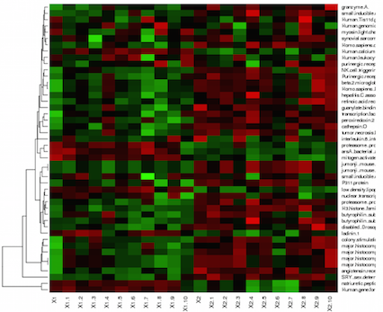

Example 1
Sample input retreived from the website for the Ashley Lab
Heatmap Builder
Example 2
Example dataset from a tutorial by Yan Cui (ycui2@uthsc.edu).
Example 3
Dataset from the
online supplement
to Eisen et al. (1998). The details of how the data was collected are outlined in the paper.